MBA по психологии — это программы профессионального образования, которые объединяют психологические знания и навыки управления для подготовки специалистов к работе в сфере психологии и бизнеса. Студенты изучают практическую психологию, организационную психологию и социальную психологию, получают дипломы MBA международного уровня, подтверждающие их квалификацию. Такое обучение в институтах психологии и школах бизнеса помогает освоить практические навыки консультирования, психологии управления и развития сотрудников, а также подготовку к работе практическим психологом или семейным психологом. Выпускники получают дипломы международного образца, что открывает возможности для карьерного роста и работы с клиентами на международном уровне. Мы составили рейтинг программ MBA по психологии, где можно пройти обучение и получить диплом, который соответствует высоким образовательным стандартам.
Информация обновлена:
ТОП онлайн-курсов обучения MBA по психологии
- 🏆 Психолог-консультант с международным дипломом MBA — НАДПО (по промокоду onlinekursy действует скидка 🎁 5%)
- 🏆 MBA по психологии в бизнесе — Московская Бизнес Академия (по промокоду onlinekursy скидка 🎁 10% )
- 🏆 Психология в бизнесе (Mini MBA) – Московская Бизнес Академия (по промокоду onlinekursy скидка 🎁 10% )
- Бизнес-психология – Онлайн-Институт Smart
- Практический психолог — Онлайн-Институт Smart
- Клинический психолог — Онлайн-Институт Smart
- Консультант в сексологии — Онлайн-институт Smart
- Психология VIP — Talentsy (по промокоду EDPART5 скидка 🎁 5%)
- Психолог-консультант — Talentsy (по промокоду EDPART5 скидка 🎁 5%)
- «Психолог-коуч» + MBA — МИПО Психология (по промокоду onlinekursy 🎁 скидка 5%)
- Психолог – когнитивно-поведенческий терапевт + MBA – МИПО Психология (по промокоду onlinekursy 🎁 скидка 5%)
- «Гештальт-терапевт» + MBA — МИПО Психология (по промокоду onlinekursy 🎁 скидка 5%)
Отличительные преимущества каждой дистанционной программы обучения MBA по психологии
| № | Курс и школа | Отличительные преимущества | |
|---|---|---|---|
| 🥇 | Психолог-консультант с международным дипломом MBA — НАДПО | Дипломы MBA и психолога международного уровня; гарантированные клиенты через платформу; более 30% практики; карьерное консультирование и резюме; ТОП-3 онлайн-институтов по соотношению цены и качества. | Перейти |
| 🥈 | MBA по психологии в бизнесе — Московская Бизнес Академия | Международный диплом MBA с занесением в ФРДО; 70% практики на реальных кейсах; актуальные материалы 2025 года; преподаватели из ведущих школ бизнеса; карьерные консультации и нетворкинг с менеджерами крупных компаний. | Перейти |
| 🥉 | Психология в бизнесе (Mini MBA) — Московская Бизнес Академия | Международный диплом MBA; 70% практики на реальных бизнес-кейсах; гибкий график; ежегодное обновление программы; обучение у экспертов с опытом 20+ лет; акцент на эмоциональный интеллект и психотипы сотрудников. | Перейти |
| 4 | Бизнес-психология — Smart | Международные дипломы MBA и HISTES; более 600 часов занятий; супервизии, деловые игры и терапевтические тройки; поддержка менторов и тьюторов; возможность вступления в профессиональные сообщества. | Перейти |
| 5 | Практический психолог — Smart | 1300 часов обучения; диплом MBA международного уровня; акцент на практику с клиентами; центр карьеры предоставляет клиентов; сотрудничество с ОППЛ и АППП; налоговый вычет 13%. | Перейти |
| 6 | Клинический психолог — Smart | Сочетание психологии и медицины; акцент на работу с психическими расстройствами; дипломы MBA и HISTES; участие в супервизиях и анализ кейсов; членство в профессиональных ассоциациях. | Перейти |
| 7 | Консультант в сексологии — Smart | Международные дипломы MBA и HISTES; акцент на практику в сфере интимных отношений; отдельные модули по гендерной и семейной психологии; работа с травмами; поддержка в создании личного бренда. | Перейти |
| 8 | Психология VIP — Talentsy | 2 года обучения; диплом РФ и международные дипломы MBA; сертификаты IPHM и CPD; личная терапия и супервизия; практика с клиентами; выбор специализации; участие в международных конференциях. | Перейти |
| 9 | Психолог-консультант — Talentsy | Два диплома (РФ и MBA Прага); 1200+ часов обучения, включая 450 часов практики; первые 10 клиентов через сервис; поддержка по бренду и маркетингу; 10 психологических подходов; международные сертификаты IPHM и CPD. | Перейти |
| 10 | «Психолог-коуч» + MBA — МИПО | Сразу три диплома (коучинг, MBA, психология); 15 месяцев обучения; скидка до 60%; совмещение психологии и бизнес-навыков; подготовка к частной практике и управлению персоналом. | Перейти |
| 11 | Психолог – когнитивно-поведенческий терапевт + MBA — МИПО | Три диплома, включая международный MBA; упор на когнитивно-поведенческую терапию; практические задания, вебинары и чат с экспертами; гибкий график; расширение специализации для повышения дохода. | Перейти |
| 12 | «Гештальт-терапевт» + MBA — МИПО | Освоение гештальт-терапии плюс бизнес-психология; три диплома / две квалификации; международный MBA; обучение у сертифицированных гештальт-терапевтов и психоаналитиков; консультирование иностранных клиентов. | Перейти |
1. 🏆 Психолог-консультант с международным дипломом MBA — Академия НАДПО
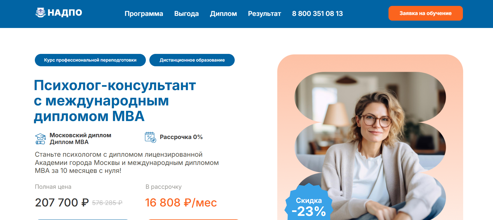- ✅ Официальный сайт: psy.nadpo.ru
- 💸 Цена обучения: 207 700 ₽ (со скидкой 23% от 576 285 ₽).
- 💳 Рассрочка: 0%, платеж 16 808 ₽/мес.
- 📚 Формат: дистанционные занятия, видеолекции, практикумы, воркшопы, супервизии, доступ к библиотекам.
- ⏳ Продолжительность: 10 месяцев.
- 📜 Документ: диплом о профессиональной переподготовке, международный диплом MBA (Чехия), сертификат HiSTES.
- 📝 Трудоустройство: Гарантированные клиенты через платформу психологов, помощь в карьерном росте и консультации HR-экспертов.
- 🔷 Для кого подходит курс: для начинающих в психологии, действующих специалистов, желающих повысить квалификацию, и всех, кто интересуется человеческим поведением.
Особенности:
Программа обучения сочетает дипломы международного уровня и подготовку практического психолога с реальной практикой. Академия входит в ТОП-3 онлайн-институтов профессионального образования по соотношению цены и качества. Студенты получают дипломы MBA и осваивают практическую психологию в формате онлайн-занятий, включая разбор кейсов, супервизии и работу в тройках. Обучение сопровождается карьерным консультированием и помощью в составлении резюме. Выпускники получают доступ к платформе психологов и начинают консультировать сразу после завершения курса. Образование соответствует государственным стандартам и вносится в реестр ФИС ФРДО, что подтверждает легальность диплома.
Чему учатся студенты:
- Методам консультирования и психологической коррекции
- Организационной психологии и психологии управления
- Семейной и возрастной психологии
- Социальной психологии и особенностям общения в группе
- Психофизиологии и анатомии нервной системы
- Профессиональной этике и правовым основам деятельности психолога
- Работе с клиентами через практикумы и групповые супервизии
Преподаватели:
- Анастасия Регнер — эксперт по трудоустройству, бизнес-тренер, консультант по развитию карьеры.
Преимущества:
- Дипломы MBA и психолога, признанные на международном уровне
- Гарантия первых клиентов и помощь в запуске частной практики
- Более 30% учебного времени уделено практическим занятиям
- Бесплатный доступ к библиотекам ЛитРес и Библиоклуб
- Поддержка HR-наставников для повышения дохода и карьерного роста
- Гибкая рассрочка с нулевой переплатой
Отзывы учеников:
Студенты Академии отмечают практическую направленность обучения, качественную обратную связь от преподавателей и возможность получить клиентов уже в процессе учебы. Многие подчеркивают удобство дистанционного формата, доступность материалов и реальную помощь в трудоустройстве.
Перейти на официальный сайт курса2. 🏆 MBA по психологии в бизнесе — Московская Бизнес Академия
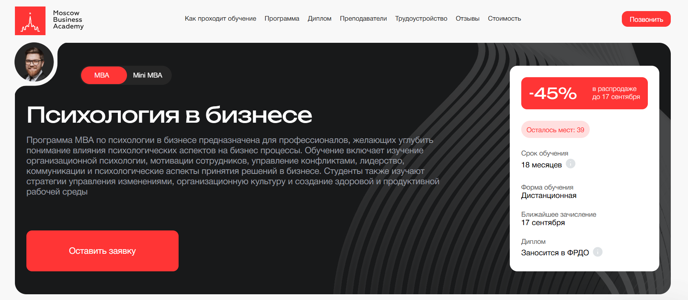- ✅ Официальный сайт: moscow.mba
- 💸 Цена обучения: со скидкой 45% стоимость 313 500 ₽.
- 💳 Рассрочка: 8 708 ₽ / мес до 36 месяцев, первый платёж через месяц.
- 📚 Формат: дистанционное обучение, видеолекции, практические задания, онлайн-ресурсы и обратная связь от преподавателей.
- ⏳ Продолжительность: 18 месяцев.
- 📜 Документ: международный диплом MBA установленного образца, заносится в ФРДО.
- 📝 Трудоустройство: помощь в составлении резюме, подготовка к собеседованиям, доступ к вакансиям и карьерные консультации.
- 🔷 Для кого подходит курс: для руководителей, предпринимателей, специалистов в сфере психологии управления и тех, кто хочет развить навыки работы с персоналом и клиентами.
Особенности:
Программа ориентирована на изучение организационной психологии, лидерства и методов работы с командой. Обучение позволяет совместить практику и теорию, студенты получают доступ к актуальным знаниям о стратегическом менеджменте и психологии управления персоналом. Занятия ведут эксперты с многолетним опытом работы в школах бизнеса и корпоративных структурах. Учебные материалы обновлены в 2025 году, что соответствует современным стандартам профессионального образования. Формат дистанционного обучения делает курс доступным для слушателей с любым графиком работы. Выпускники получают дипломы MBA международного уровня, что подтверждают государственные аккредитации и лицензии. Программа помогает освоить практические навыки управления людьми и улучшить эффективность бизнеса. После окончания обучения выпускники получают дипломы, признанные на международном уровне.
Чему учатся студенты:
- Анализировать организационную культуру и создавать здоровую рабочую среду
- Применять методы психологии управления и мотивации сотрудников
- Управлять конфликтами и проводить успешные переговоры
- Разрабатывать стратегии повышения эффективности команд
- Применять поведенческую психологию в маркетинге и продажах
- Использовать коучинг и консультирование в бизнесе
Преподаватели:
- Романенко Виктория — специалист по внедрению корпоративного обучения, опыт работы в колледжах и ведущих вузах Москвы
- Наталия Шувалова — бизнес-психолог, бизнес-тренер
- Анастасия Тодовянская — предприниматель, кандидат экономических наук, эксперт в аудите и бухгалтерии
- Эксперты из российских и зарубежных компаний, включая инвестиционные проекты и финансовый менеджмент
Преимущества:
- Международный диплом MBA с занесением в ФРДО
- 70% обучения — практика на реальных кейсах
- Современная дистанционная платформа с поддержкой кураторов
- Возможность совмещать обучение с работой
- Преподаватели — действующие специалисты из ведущих школ бизнеса
- Карьерные консультации и помощь в трудоустройстве
- Нетворкинг с менеджерами крупных компаний
Отзывы учеников:
Студенты отмечают высокий профессионализм преподавателей, доступность материалов и удобный формат дистанционного обучения. Многие выделяют ценность практических заданий, которые помогают сразу применять знания в работе. Выпускники подчеркивают, что программа позволяет получить новые навыки управления и повысить карьерные перспективы.
Перейти на официальный сайт курса3. 🏆 Психология в бизнесе (Mini MBA) – Московская Бизнес Академия
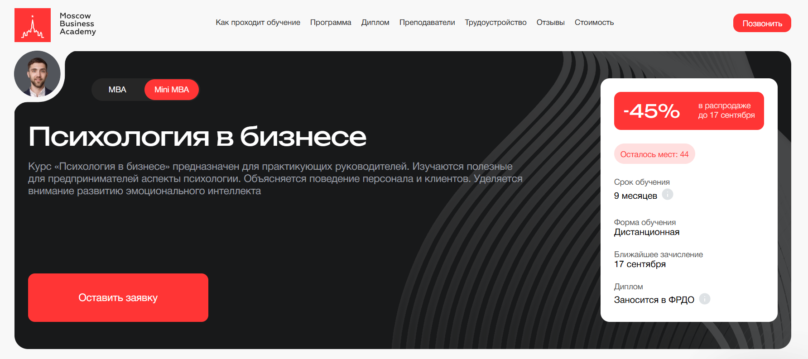
- ✅ Официальный сайт: moscow.mba
- 💸 Цена: со скидкой 45% стоимость 227 095 ₽.
- 💳 Рассрочка: 9 462 ₽/мес до 24 месяцев, первый платеж через месяц.
- 📚 Формат: дистанционное обучение, видеолекции, 190 материалов, 18 практических заданий, онлайн-вебинары и консультации.
- ⏳ Продолжительность: 9 месяцев.
- 📜 Документ: международный диплом установленного образца, заносится в ФРДО.
- 📝 Трудоустройство: помощь в составлении резюме, создании портфолио и подготовке к собеседованиям.
- 🔷 Для кого подходит курс: менеджеров, руководителей, HR-специалистов, тимлидов и предпринимателей.
Особенности:
Программа создана для руководителей, которым важны практические навыки управления и психологии. Она помогает развить эмоциональный интеллект, понять поведение сотрудников и клиентов, освоить техники работы с командой. Учебный план обновляется ежегодно, что обеспечивает актуальность знаний. Выпускники получают дипломы MBA международного уровня, которые подтверждают квалификацию. В программу входят практические кейсы, индивидуальные проекты и обратная связь от преподавателей. Формат дистанционного обучения позволяет совмещать обучение с работой и личными делами. Студенты получают доступ к образовательной платформе и онлайн-ресурсам в реальном времени.
Чему учатся студенты:
- Разрабатывать стратегии управления бизнесом
- Осваивать основы менеджмента и проектного управления
- Изучать операционный менеджмент и распределение ресурсов
- Применять психоанализ в бизнес-консультировании
- Изучать поведенческую психологию и психотипы сотрудников
- Разрабатывать эффективные стратегии маркетинга и конкурентоспособности
- Получать навыки управления персоналом и разрешения конфликтов
- Осваивать психологические техники переговоров и коммуникаций
Преподаватели:
- Алексей Матушкин — магистр инноваций и социологии, преподаватель и лингво-коуч, более 12 лет опыта, член IATEFL.
- Надежда Ведерникова — практикующий член всероссийской психотерапевтической лиги, эксперт в консалтинге и маркетинге с опытом более 20 лет.
- Ангелина Шам — корпоративный бизнес-психолог, кандидат наук, автор книг по психологии и коммуникациям, эксперт в коучинге.
Преимущества:
- Дипломы международного уровня, подтвержденные аккредитациями
- 70% практики на реальных бизнес-кейсах
- Обучение у экспертов, работающих в ведущих школах бизнеса
- Гибкий график и доступ из любой точки мира
- Помощь в трудоустройстве и создании портфолио
- Нетворкинг с менеджерами топовых компаний России
Отзывы учеников:
Студенты отмечают, что обучение помогает систематизировать знания в сфере психологии бизнеса и получить практические навыки управления. Подчеркивают удобный дистанционный формат, насыщенные модули и доступность преподавателей для обратной связи. Многие выпускники пишут, что программа помогла продвинуться по карьерной лестнице и повысить квалификацию.
Перейти на официальный сайт курса4. Бизнес-психология – Онлайн Институт Smart
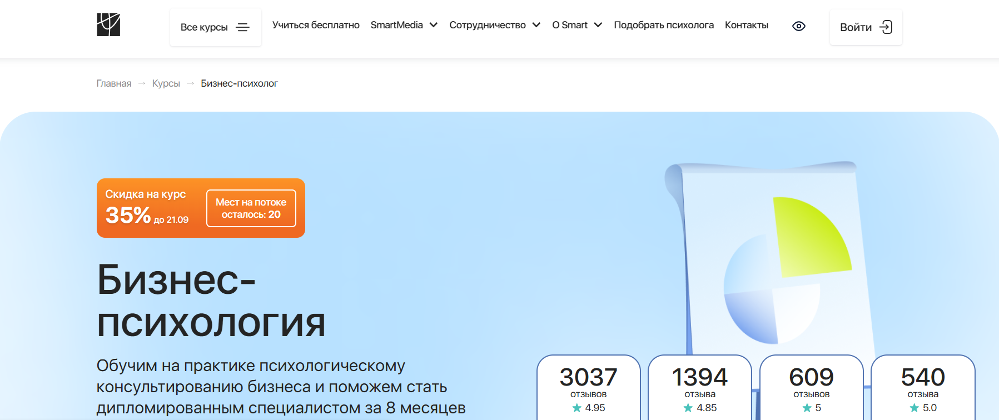- ✅ Официальный сайт: smart-inc.ru
- 💸 Цена: от 199 900 ₽ (со скидкой 35%).
- 💳 Рассрочка: 8 329 ₽/месяц, 3–24 месяца без переплат.
- 📚 Формат: видеолекции, тесты, домашние задания, практика в мини-группах, сессии «Вопрос-ответ», групповые супервизии.
- ⏳ Продолжительность: от 8 месяцев, 600+ часов.
- 📜 Документ: диплом о профессиональной переподготовке, международный диплом MBA (Чехия), HISTES (Гамбург).
- 📝 Трудоустройство: предоставление клиентов для практики, карьерный центр, сопровождение экспертов.
- 🔷 Для кого подходит курс: руководителям, коучам, менеджерам, желающим освоить сферу психологии и консультирование бизнеса.
Особенности:
Программа сочетает теорию и практику, включая реальные кейсы и тренинги по организационной психологии. Обучение проходит полностью дистанционно через интерактивную платформу с доступом к материалам 24/7. Студенты получают ценные практические навыки управления и консультирования, что помогает им работать с первыми лицами компаний. Дипломы MBA и дипломы международного уровня подтверждают квалификацию выпускника и открывают возможности трудоустройства за рубежом. В институте психологии Smart обучение сопровождается тьюторами и менторами, что позволяет студентам чувствовать поддержку на всех этапах. В программу включены супервизии, деловые игры и работа в терапевтических тройках. Выпускники получают дипломы, признанные на государственном и международном уровне, что дает конкурентное преимущество в сфере психологических услуг.
Чему учатся студенты:
- Эффективному ведению переговоров и публичных выступлений
- Разрешению организационных конфликтов
- Коучингу и психологии лидерства
- Построению продуктивной коммуникации в командах
- Развитию навыков управления и эмоционального интеллекта сотрудников
Преподаватели:
- Светлана Варнавская — коуч МСС ICF, более 4000 часов практики, ментор, супервизор, специалист по трансформационному коучингу
- Яна Падура — руководитель HR-департамента, получила диплом MBA, практикующий психолог
Преимущества:
- Международные дипломы MBA и дипломы установленного образца
- Гарантированная поддержка тьюторов и менторов
- Возможность совмещать учебу с работой благодаря дистанционному формату
- Поддержка карьерного центра и предоставление клиентов
- Сотрудничество с ОППЛ и Ассоциацией профессиональных психологов
- Возможность вступления в профессиональные сообщества
Отзывы учеников:
Студенты отмечают высокий уровень преподавателей, практическую направленность обучения и удобный формат. Многие подчеркивают, что курс помогает освоить сферу психологического консультирования, получить дипломы международного уровня и начать карьеру в сфере психологии.
Перейти на официальный сайт курса5. Практический психолог — Институт Smart
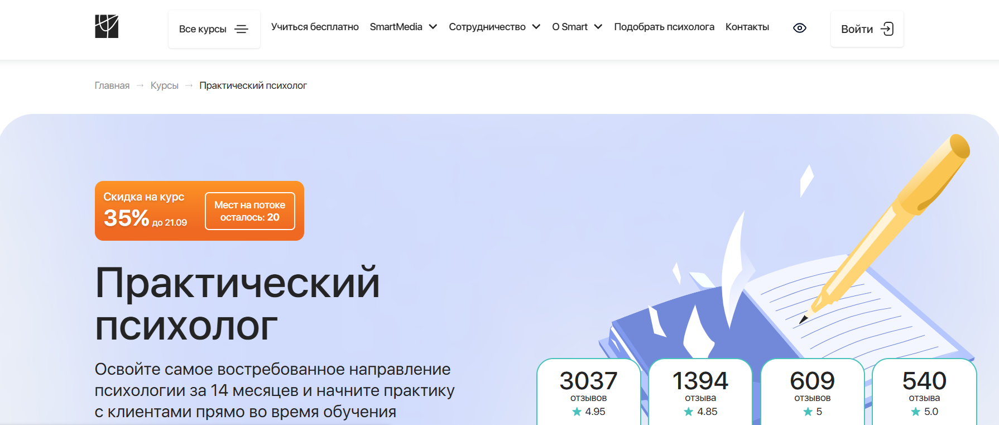- ✅ Официальный сайт: smart-inc.ru
- 💸 Цена: от 234 900 ₽ со скидкой 35%
- 💳 Рассрочка: 9 788 ₽/мес от 3, 6, 12 или 24 месяца, без переплат, первый платёж через месяц
- 📚 Формат: дистанционные занятия, видеолекции, тесты, домашние задания, супервизии, практические сессии
- ⏳ Продолжительность: 14 месяцев, 1300 часов
- 📜 Документ: диплом о профессиональной переподготовке, международный диплом MBA
- 📝 Трудоустройство: центр карьеры Smart предоставляет клиентов для практики и помогает выпускникам выйти на рынок психологических услуг
- 🔷 Для кого подходит курс: начинающим специалистам, педагогам, психологам, а также тем, кто хочет освоить сферу психологического консультирования и помогать другим
Особенности:
Программа обучения создана в институте профессионального образования с акцентом на практику. Студенты получают не только теоретическую подготовку, но и осваивают навыки работы с клиентами в процессе учебы. Курс включает супервизии, групповые занятия и отработку реальных кейсов. Обучение проходит на интерактивной платформе с круглосуточным доступом к материалам. Выпускники получают дипломы международного уровня, включая дипломы MBA, признанные в России и за рубежом. Программа помогает студентам сформировать практические навыки консультирования, которые востребованы в различных сферах психологии управления, семейного и социального направления. Институт сотрудничает с профессиональными сообществами, что подтверждает статус программы и ее признание. Такой подход открывает возможности карьерного роста и выхода на международные уровни работы.
Чему учатся студенты:
- Выявлять истинные мотивы обращения клиента
- Устанавливать доверительные отношения с людьми
- Использовать современные методы консультирования
- Применять техники психологии управления и организационной психологии
- Работать с запросами из семейной и социальной психологии
- Проходить аттестацию и подтверждать профессиональные квалификации
Преподаватели:
- Марина Сокольская — доктор психологических наук, доцент ВАК, академик РАЕ, профессор кафедры психологии НИЯУ МИФИ
- Светлана Варнавская — практикующий специалист, преподаватель курсов в сфере психологии
Преимущества:
- Дипломы международного уровня, включая дипломы МВА
- Поддержка кураторов и тьюторов 24/7
- Помощь центра карьеры и предоставление клиентов для практики
- Сотрудничество с профессиональными ассоциациями (ОППЛ, АППП)
- Практико-ориентированная программа с акцентом на реальные кейсы
- Возможность совмещать обучение с работой и личной жизнью
- Гибкая рассрочка без переплат и возврат 13% от стоимости через налоговый вычет
Отзывы учеников:
Студенты отмечают высокое качество преподавания, доступность материалов и поддержку кураторов. Особенно ценят практические задания и возможность отрабатывать навыки консультирования в мини-группах. Многие подчеркивают, что программа помогла выйти в сферу психологии и получить первых клиентов еще во время обучения.
Перейти на официальный сайт курса6. Клинический психолог — Smart
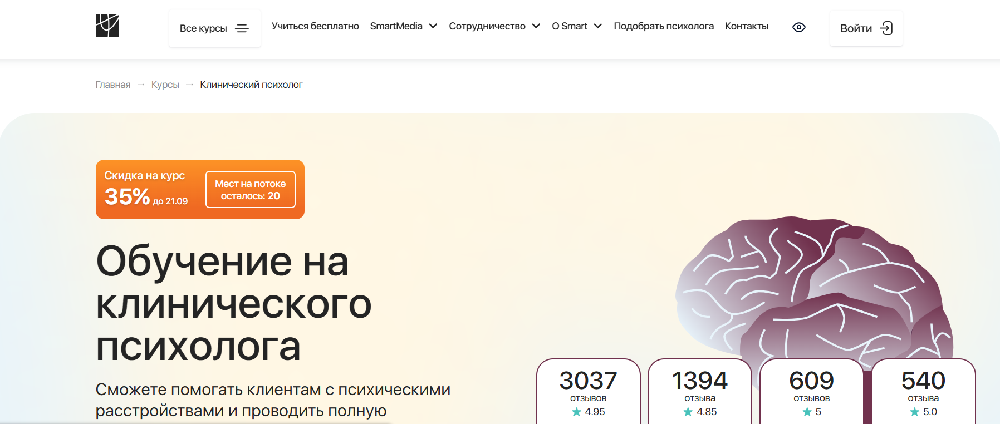- ✅ Официальный сайт: smart-inc.ru
- 💸 Цена: от 234 900 ₽ со скидкой 35% (до 21.09).
- 💳 Рассрочка: 9 788 ₽/мес на 3, 6, 12 или 24 месяца, первый платёж через месяц, минимальный платёж от 9 788 ₽.
- 📚 Формат: дистанционное обучение, видеолекции, тесты, супервизии, практические задания и проекты.
- ⏳ Продолжительность: от 13 месяцев, более 650 часов.
- 📜 Документ: диплом о профессиональной переподготовке, международный диплом MBA (Чехия), диплом HISTES (Гамбург).
- 📝 Трудоустройство: помощь Центра карьеры, предоставление клиентов для практики, сопровождение специалистов.
- 🔷 Для кого подходит курс: для желающих сменить профессию, практикующих психологов, медицинских работников, студентов с любым образованием.
Особенности:
Программа объединяет психологию и медицину, что позволяет работать с психическими расстройствами комплексно. В институте профессионального образования акцент сделан на практических навыках, регулярных супервизиях и анализе реальных кейсов. Курсы включают работу в мини-группах и персональную обратную связь от преподавателей. Студенты получают доступ к платформе с материалами 24/7 и возможность проходить обучение в удобном темпе. Завершив обучение, выпускники получают дипломы международного уровня, подтверждающие квалификацию. Программа MBA открывает путь в сферу организационной психологии и бизнес-консультирования. Институт сотрудничает с ОППЛ и АППП, что обеспечивает членство в профессиональных сообществах. Выпускники получают дипломы, признанные как в России, так и за её пределами.
Чему учатся студенты:
- Работе с депрессией, ПТСР, БАР, ПРЛ, ОКР и другими расстройствами
- Методам психодиагностики и составлению заключений
- Выявлению ранних симптомов психических нарушений
- Пониманию взаимосвязи психосоматики и здоровья
- Применению техник консультирования и психокоррекции
- Работе с детьми, подростками и взрослыми клиентами
- Использованию знаний из психофармакологии и нейропсихологии
Преподаватели:
- Кристина Юст — клинический психолог, детский нейропсихолог, более 4000 часов консультаций, ежегодно проводит более 150 диагностик.
- Альбина Собина — эксперт в области клинической психологии и консультирования.
Преимущества:
- Дипломы международного уровня, включая MBA
- Практическая подготовка с анализом реальных кейсов
- Сопровождение кураторов, тьюторов и менторов
- Поддержка Центра карьеры и предоставление клиентов
- Возможность вступления в профессиональные ассоциации
- Гибкий график обучения и рассрочка без переплат
- Признание дипломов на государственном и международном уровнях
Отзывы учеников:
Студенты отмечают высокий уровень преподавателей и практическую направленность программы. Многие подчеркивают удобство дистанционного формата и оперативную поддержку кураторов. Отдельно выделяют ценность супервизий и возможность сразу нарабатывать практику с клиентами. Выпускники подтверждают, что полученные знания помогают успешно работать в сфере психологии и консультирования.
Перейти на официальный сайт курса7. Консультант в сексологии — Онлайн институт Smart
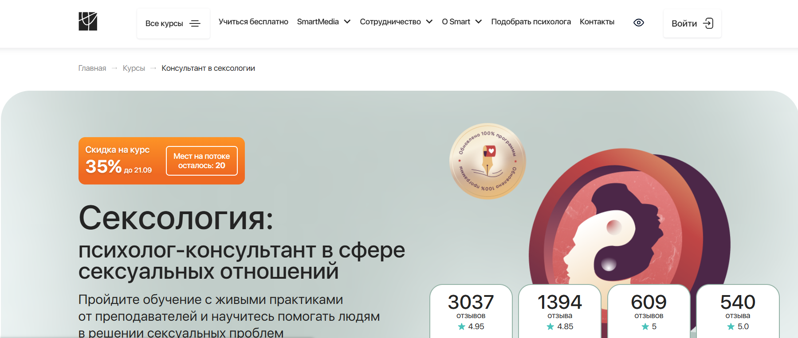- ✅ Официальный сайт: smart-inc.ru
- 💸 Цена: от 159 900 ₽ (со скидкой 35%).
- 💳 Рассрочка: от 6 663 ₽/месяц, варианты на 3, 6, 12 и 24 месяца, без переплат.
- 📚 Формат: дистанционное обучение, видеолекции, практики, разбор кейсов, тесты, консультации.
- ⏳ Продолжительность: от 7 месяцев (450 часов).
- 📜 Документ: диплом о профессиональной переподготовке, международный диплом MBA (Чехия), диплом HISTES (Гамбург).
- 📝 Трудоустройство: центр карьеры Smart, помощь в поиске клиентов, сопровождение после выпуска.
- 🔷 Для кого подходит курс: психологам, коучам, педагогам, медицинским работникам и тем, кто хочет освоить сферу практической психологии и консультирования.
Особенности:
Программа создана для тех, кто хочет освоить практику психологического консультирования в сфере интимных отношений. Обучение построено так, чтобы совмещать теорию и большое количество практических заданий. Студенты проходят отработку навыков в мини-группах, участвуют в сессиях с экспертами и супервизиях. Курс включает отдельные модули по семейной и гендерной психологии, работе с травмами и консультированию пар. Выпускники получают дипломы международного уровня и возможность вступления в профессиональные сообщества. Поддержка наставников и кураторов помогает не только в учебе, но и в формировании личного бренда. В институте профессионального образования Smart акцент сделан на развитие практических навыков и уверенности в работе с клиентами.
Чему учатся студенты:
- Работать с сексуальными дисфункциями и зависимостями
- Изучать гендерную и семейную психологию
- Проводить консультации для пар и отдельных клиентов
- Разрабатывать техники для работы с травмами сексуального характера
- Выстраивать процесс консультирования от первого контакта до результата
- Использовать методы организационной и социальной психологии
Преподаватели:
- Лилия Гарипова — сексолог, гештальт-терапевт, член Международной ассоциации сексологов, автор книги «Анатомия женственности», сертифицированный тренер по интимной гимнастике
- Мария Медведева — практикующий психолог, эксперт федеральных СМИ, преподаватель курсов по консультированию
Преимущества:
- Международные дипломы MBA и HISTES, подтвержденные на государственном уровне
- Обновленная программа с увеличенным количеством практики
- Возможность совмещать обучение с работой благодаря дистанционному формату
- Поддержка центра карьеры, доступ к клиентам и консультациям
- Сотрудничество с ОППЛ и АППП, льготное членство в профессиональных сообществах
- Доступ к курсу и материалам навсегда
Отзывы учеников:
Студенты чаще всего отмечают высокое качество преподавания, практико-ориентированный подход и ценность обратной связи. Многим нравится, что обучение позволяет получить дипломы международного уровня и реальных клиентов уже во время практики. Подчеркивают удобный формат, возможность совмещать учебу с работой и поддержку наставников.
Перейти на официальный сайт курса8. Психология VIP — Онлайн-университет помогающих профессий Talentsy
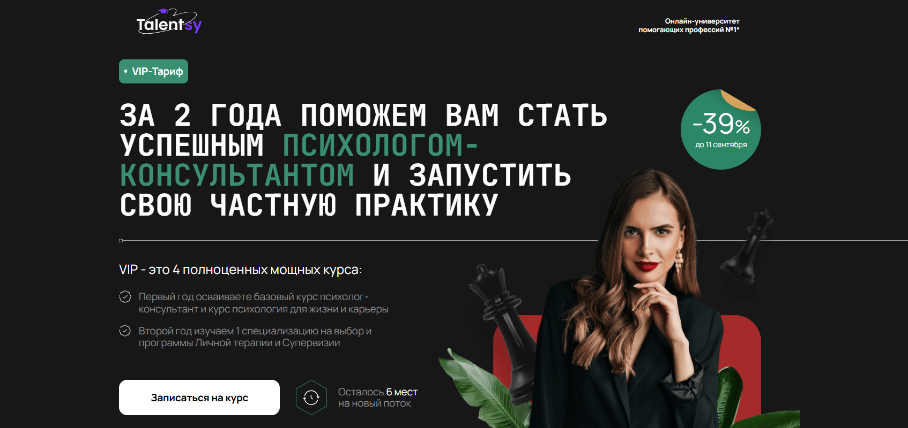- ✅ Официальный сайт: talentsy.ru
- 💸 Цена: 520 000 ₽ (скидка -39%).
- 💳 Рассрочка: 21 667 ₽/мес до 24 месяцев, первый платеж через 2 месяца.
- 📚 Формат: видеолекции, практические занятия, мини-группы, личная терапия, супервизия.
- ⏳ Продолжительность: 2 года.
- 📜 Документ: диплом о профессиональной переподготовке, международные дипломы MBA, сертификаты IPHM и CPD.
- 📝 Трудоустройство: первые клиенты для консультирования, помощь в запуске частной практики.
- 🔷 Для кого подходит курс: для тех, кто хочет освоить психологию с нуля, студентов, действующих специалистов, а также тех, кому нужен диплом для официальной работы.
Особенности:
Программа объединяет фундаментальное психологическое образование и международный уровень подготовки. Первый год посвящен освоению базового курса и психологии для жизни и карьеры, второй — выбору специализации и прохождению личной терапии и супервизии. Обучение строится в мини-группах, что позволяет студентам получать максимум внимания от преподавателей. Talentsy сотрудничает с международными ассоциациями психологии, что подтверждает высокий уровень преподавания. Студенты не только получают дипломы MBA и международные сертификаты, но и реальных клиентов для первых консультаций. Обучение поддерживается личным куратором и включает современные методы развития практических навыков.
Чему учатся студенты:
- Психологическому консультированию и практическим методикам
- Пониманию психологии личности и возрастных особенностей
- Работе с кризисными состояниями и стрессами
- Навыкам управления личным брендом психолога
- Организационной и социальной психологии
- Семейному и детскому консультированию
Преподаватели:
- Елена Новоселова — психотерапевт с 30-летним опытом, автор книг и программ, эксперт телеканала «Культура»
- Васильева — практикующий психолог, кандидат наук
- Кунникова — специалист по консультированию и семейной психологии
- Виндекер — доктор наук, преподаватель с международным уровнем
- Лебедева — эксперт в сфере психологии управления
- ПодкорытоВА, Николаева, Фомичева, Двойнин, Киселёв, Меглинская, Томина — ведущие специалисты России в области практической психологии
Преимущества:
- Получение диплома РФ и международных дипломов MBA
- Практика с реальными клиентами во время обучения
- Индивидуальное сопровождение и куратор
- Участие в международных конференциях и проектах
- Поддержка профессиональных ассоциаций и организаций
- Возможность выбрать специализацию под карьерные цели
- Сильная практическая база — 600 часов занятий
- Закрытый клуб выпускников и мастер-классы от ведущих психологов
Отзывы учеников:
Студенты отмечают высокое качество преподавания и практическую направленность программы. Многие подчеркивают ценность международных дипломов и возможность получить первых клиентов уже во время учебы. Отдельно выделяют поддержку кураторов и атмосферу в мини-группах, которая помогает быстрее освоить знания и увереннее начать практику.
Перейти на официальный сайт курса9. Психолог-консультант — Talentsy, онлайн-университет помогающих профессий
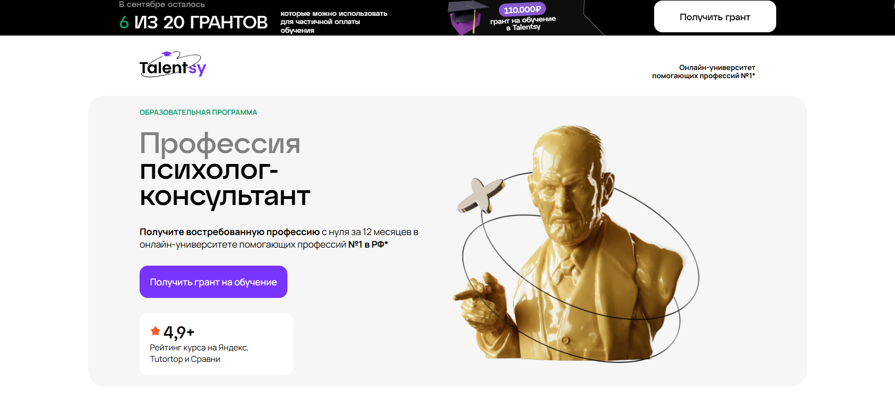- ✅ Официальный сайт: talentsy.ru
- 💸 Цена: от 225 000 ₽ со скидкой
- 💳 Рассрочка: от 9375 ₽/мес - 3, 6, 12 или 24 месяца без переплат, первый платёж через 2 месяца.
- 📚 Формат: видеолекции 15–40 минут, домашние задания, практические занятия в мини-группах, супервизии, демосессии, PDF-конспекты, дополнительные материалы.
- ⏳ Продолжительность: 12 месяцев.
- 📜 Документ: диплом о профессиональной переподготовке установленного образца РФ и международный диплом MBA Open European Academy (г. Прага), а также международные сертификаты IPHM и CPD.
- 📝 Трудоустройство: первые 10 клиентов через сервис pomogayu.ru, поддержка кураторов по бренду и маркетингу, возможность вступления в профессиональные ассоциации.
- 🔷 Для кого подходит курс: для начинающих без психологического образования, специалистов смежных сфер, желающих стать практическим психологом и консультировать клиентов.
Особенности:
Программа обучения объединяет академические знания и практику на международном уровне. Студенты изучают 10 психологических подходов и отрабатывают практические навыки с клиентами уже во время курса. Учебный план основан на ФГОС ВО по психологии и включает более 1200 часов, в том числе 450 часов практики. Выпускники получают дипломы MBA, подтверждающие квалификацию на международном уровне, что позволяет оказывать психологические услуги в России и за рубежом. Обучение проходит в личном кабинете, доступном 24/7, а поддержка кураторов и преподавателей помогает студентам уверенно осваивать новые знания. Talentsy сотрудничает с ведущими ассоциациями и профессиональными объединениями, что обеспечивает признание выпускников в сфере психологии.
Чему учатся студенты:
- Выстраивать ход консультации и устанавливать доверительные отношения
- Применять когнитивно-поведенческий, гештальт и клиент-центрированный подходы
- Проводить диагностику и выявлять личные особенности клиента
- Работать с проблемами самооценки, тревогой, стрессом, потерями и кризисами
- Использовать методы арт-терапии и краткосрочной терапии
- Создавать личный бренд и привлекать клиентов
Преподаватели:
- Ольга Виндекер — психолог с опытом более 30 лет, член Российской Психотерапевтической Лиги, автор книг и теле-радиоведущая
- Инна Васильева — доктор психологических наук, профессор, автор более 170 научных статей
- Ксения Кунникова — кандидат психологических наук, нейропсихолог, руководитель грантов РФФИ
- Елена Николаева — доктор биологических наук, профессор, заведующая кафедрой возрастной психологии РГПУ им. А.И. Герцена
- Анжелика Вильгельм — кандидат психологических наук, супервизор, член Российского психологического общества
- Юлия Лебедева — кандидат психологических наук, педагогический психолог с опытом преподавания более 20 лет
- Рустам Муслумов — кандидат психологических наук, доцент УрФУ
- Ярослав Коряков — психотерапевт, супервизор Европейской конфедерации психоаналитической психотерапии
Преимущества:
- Два диплома: российский и международный MBA
- 450 часов практических занятий и первые клиенты во время обучения
- Партнёрство с международными ассоциациями психологии
- Поддержка кураторов и наставников по личному бренду
- Доступ к платформе и материалам навсегда
- Возможность совмещать учёбу с работой
- Сеть профессиональных контактов через ассоциации и встречи
Отзывы учеников:
Студенты отмечают высокий уровень преподавателей и ценность практических занятий. Большинство выпускников подчеркивают, что обучение помогает уверенно консультировать клиентов, а поддержка кураторов и первые клиенты от школы позволяют быстрее начать карьеру. Положительно выделяют гибкий формат и доступность материалов, что удобно для совмещения с работой.
Перейти на официальный сайт курса10. «Психолог-коуч» + MBA — Московский Институт Профессионального Образования
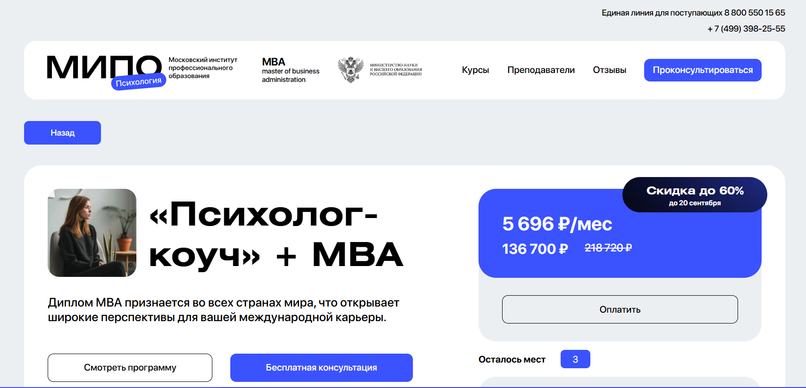
- ✅ Официальный сайт: mipoin.ru
- 💸 Цена: со скидкой 136 700 ₽.
- 💳 Рассрочка: возможна, ежемесячный платёж от 5 696 ₽.
- 📚 Формат: дистанционное обучение, видеолекции, домашние задания, тесты, консультации.
- ⏳ Продолжительность: 15 месяцев.
- 📜 Документ: три диплома: «Коучинг в индивидуальном психологическом консультировании» (494 часа), «MBA: Business Psychology» (256 часов), «Психология» (998 часов).
- 📝 Трудоустройство: выпускники получают дипломы международного уровня, подтверждают квалификации и могут работать в сфере психологии, управлении персоналом и бизнес-коучинге.
- 🔷 Для кого подходит курс: для практикующих психологов, тех, кто хочет стать семейным психологом, специалистов по организационной психологии, а также для тех, кто планирует карьеру с международным дипломом mba.
Особенности:
Программа объединяет психологическое образование и бизнес-подходы. Студенты изучают сферу психологического консультирования, осваивают практические навыки и получают дипломы mba. Московский институт профессионального образования даёт возможность учиться дистанционно, сохраняя гибкий график. Выпускники получают дипломы мва, которые признаются на международном уровне. Сочетание психологии управления и организационной психологии позволяет использовать знания в разных областях. Обучение помогает студентам развить навыки управления и психологическую компетентность. Программа ориентирована на тех, кто планирует работать с клиентами, оказывать психологические услуги и консультировать сотрудников. Курсы построены на стандартах профессионального образования. Студенты прошли обучение отмечают эффективность программы и ценность знаний для личных и профессиональных целей.
Чему учатся студенты:
- Индивидуальному психологическому консультированию
- Психологии бизнеса и управления персоналом
- Организационной и социальной психологии
- Методам коучинга для работы с клиентами
- Навыкам управления и развитию сотрудников
- Предоставлению психологических услуг на профессиональном уровне
Преподаватели:
- Опытные практические психологи и специалисты по бизнес-психологии
- Преподаватели института психологии с профессиональным образованием
Преимущества:
- Международный диплом, признаваемый во всех странах
- Три диплома и две квалификации по итогам обучения
- Возможность совмещения учебы с работой
- Поддержка преподавателей и консультантов
- Скидка до 60% и доступная рассрочка
- Применение знаний в бизнесе и психологической практике
Отзывы учеников:
Выпускники отмечают высокий уровень подготовки, современную подачу материала и ценность практических заданий. Многие пишут, что прошла курс помог выйти на новый профессиональный уровень, расширить сферу психологического консультирования и повысить эффективность работы с клиентами.
Перейти на официальный сайт курса11. Психолог – когнитивно-поведенческий терапевт + MBA – Московский институт профессионального образования
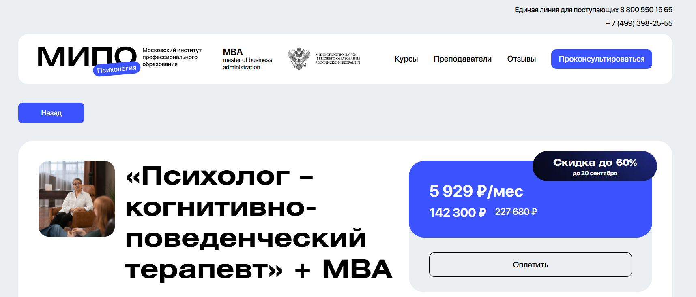- ✅ Официальный сайт: mipoin.ru
- 💸 Цена: 227 680 ₽ (со скидкой 142 300 ₽).
- 💳 Рассрочка: от 5 929 ₽/мес.
- 📚 Формат: дистанционное обучение, лекции, видеоуроки, практические задания, тесты, вебинары и чат с преподавателями.
- ⏳ Продолжительность: 15 месяцев.
- 📜 Документ: три диплома о профессиональной переподготовке, международный диплом MBA и международное приложение.
- 📝 Трудоустройство: возможность практики и дальнейшей работы по специальности с подтвержденными квалификациями.
- 🔷 Для кого подходит курс: начинающим и практикующим психологам, социальным работникам, специалистам по бизнесу и всем, кто хочет повысить квалификацию.
Особенности:
Программа сочетает практическую психологию и бизнес-подготовку, что позволяет выпускникам уверенно работать как в сфере психологии, так и в школах бизнеса. Курсы построены на практических кейсах, реальных заданиях и живых вебинарах с экспертами. Студенты осваивают навыки управления клиентами и развивают понимание психологии управления и коммуникаций. Выпускники получают дипломы MBA международного уровня, которые открывают путь к консультированию и работе за рубежом. Благодаря гибкому онлайн-формату можно совмещать обучение с работой и личными делами. Программа дает знания для построения карьеры практического психолога, коуча или бизнес-консультанта. Особое внимание уделяется применению когнитивно-поведенческой терапии и методам организационной психологии.
Чему учатся студенты:
- Применять методы когнитивно-поведенческой терапии
- Проводить психодиагностику и консультирование
- Осваивать психологию управления и карьерный коучинг
- Развивать навыки эффективных коммуникаций и лидерства
- Использовать техники бизнес-консультирования
- Решать задачи в сфере организационной психологии
Преподаватели:
- Антонкина Таисия — когнитивно-поведенческий терапевт, профессиональный коуч
- Шушкина Людмила — семейный психолог, автор книг по популярной психологии
- Урывчикова Татьяна — нейропсихолог, член Ассоциации когнитивно-поведенческой психотерапии
- Бербер Наталья — кандидат психологических наук, арт-терапевт
- Череменская Мария — выпускник МГУ, специалист по гештальт-терапии
- Рыбальченко Наталья — консультирующий психолог, религиовед
- Ильин Александр — специалист по инклюзивному образованию
- Дарменко Елена — кандидат экономических наук, доцент МГТУ и МГИМО
- Лебедев Александр — гипнотерапевт, юридический психолог
- Лаврова Юлия — семейный психолог, эксперт на телевидении
- Латынцева Ольга — ведущая тренингов и психолог
Преимущества:
- Три диплома, включая международный диплом MBA
- Дистанционный формат с гибким графиком
- Обучение у практикующих специалистов и преподавателей вузов
- Программа объединяет сферу психологии и бизнес-консультирование
- Рассрочка с доступными ежемесячными платежами
- Практические задания приближены к реальным запросам клиентов
- Возможность расширить специализацию и повысить доход от психологических услуг
Отзывы учеников:
Студенты отмечают удобный формат дистанционного обучения и доступность материалов. Многие подчеркивают ценность практических заданий и работу с кураторами. Отмечают высокую квалификацию преподавателей, оперативную обратную связь и возможность совмещать обучение с работой. Популярны положительные отзывы о реальной пользе дипломов для работы в сфере психологии и бизнес-консультирования.
Перейти на официальный сайт курса12. «Гештальт-терапевт» + MBA — Московский институт профессионального образования
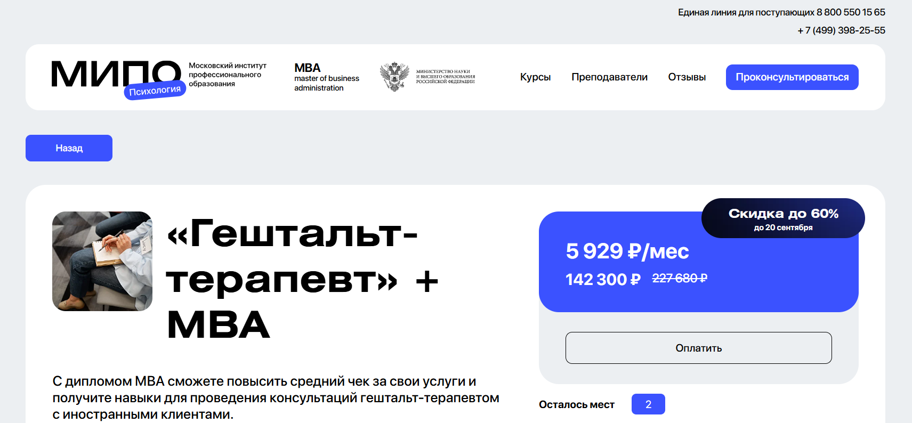- ✅ Официальный сайт: mipoin.ru
- 💸 Цена: 227 680 ₽ (со скидкой — 142 300 ₽).
- 💳 Рассрочка: от 5 929 ₽ в месяц, оплата до 20 сентября.
- 📚 Формат: дистанционное обучение: видеолекции, домашние задания, тесты, консультации с преподавателями.
- ⏳ Продолжительность: 15 месяцев.
- 📜 Документ: три диплома / две квалификации, включая международный диплом MBA по направлению бизнес-психологии.
- 📝 Трудоустройство: повышение ценности на рынке психологических услуг, работа с иностранными клиентами.
- 🔷 Для кого подходит курс: практическим психологам, специалистам в сфере психологии, семейным психологам и тем, кто планирует развиваться в области консультирования.
Особенности:
Программа объединяет психологическое образование и стандарты школ бизнеса, позволяя освоить навыки управления и консультирования. Студенты института профессионального образования получают дипломы международного уровня, которые подтверждают квалификацию и открывают доступ к новым карьерным возможностям. Выпускники получают ценные знания по организационной психологии и психологии управления, что помогает эффективно работать с клиентами и развивать психологические услуги. Обучение охватывает практику в сфере психологии и методы работы с социальными группами. Программа ориентирована как на профессиональные цели, так и на личное развитие, что делает её универсальной для специалистов разных направлений. Она помогает студентам освоить новые методы консультирования, повысить уровень практических навыков и укрепить статус специалиста.
Чему учатся студенты:
- Осваивают практическую психологию и методы гештальт-терапии
- Изучают психологию управления и основы организационной психологии
- Получают навыки консультирования семейных и личных клиентов
- Формируют знания в области бизнес-психологии и менеджмента
- Изучают методы эффективного взаимодействия с клиентами международного уровня
Преподаватели:
- Сергачева Ксения Викторовна — практический психолог, сертифицированный гештальт-терапевт, арт-терапевт
- Смыслов Дмитрий Анатольевич — кандидат психологических наук, доцент, академик Международной педагогической академии, практикующий консультант
- Лодзь Анна Николаевна — психоаналитический психотерапевт, гипнолог, супервизор, автор курсов по психотерапии
Преимущества:
- Получение диплома MBA международного уровня
- Совмещение знаний в сфере психологии и бизнес-образования
- Возможность консультировать иностранных клиентов
- Доступная рассрочка и скидки до 60%
- Фокус на практических навыках консультирования
- Три диплома и две квалификации за 15 месяцев
Отзывы учеников:
Выпускники отмечают высокое качество преподавателей и глубокую практическую направленность программы. Многие подчеркивают, что обучение помогло получить дипломы MBA и повысить стоимость психологических услуг. Студенты также выделяют удобный онлайн-формат и поддержку со стороны института, что позволяет совмещать обучение с работой.
Перейти на официальный сайт курсаКто такой психолог с МВА дипломом?
Психолог с МВА дипломом — это специалист, который сочетает знания в области психологии и бизнеса. Такой профессионал не только понимает внутренние механизмы человеческой психики, но и владеет инструментами стратегического управления, маркетинга, HR и корпоративных финансов. В результате он способен решать задачи не только в сфере индивидуальной и групповой психологии, но и на уровне бизнеса, организаций и крупных корпораций.
Что делают психологи, получившие диплом МВА и чем занимаются?
Психологи, получившие диплом МВА, применяют свои навыки в самых разных сферах: от HR-менеджмента до коучинга руководителей. Они умеют анализировать поведение сотрудников, управлять корпоративной культурой и внедрять стратегии, повышающие эффективность бизнеса.
- Коучинг руководителей и топ-менеджеров.
- Управление изменениями в организации.
- Повышение мотивации и вовлеченности сотрудников.
- Анализ и формирование корпоративной культуры.
- Консультирование в кризисных ситуациях.
Что должен знать и уметь психолог с МВА-дипломом?
Чтобы быть востребованным, такой специалист должен обладать комплексными знаниями и навыками.
- Классическая и прикладная психология (мотивация, стресс-менеджмент, психодиагностика).
- Бизнес-аналитика и управление проектами.
- Основы маркетинга, брендинга и PR.
- Финансовая грамотность и стратегическое планирование.
- Управление персоналом, переговоры и медиация.
Главное преимущество — умение «переводить» психологические знания в язык бизнеса и наоборот.
Востребованность и зарплаты в России
Профессия психолога с МВА становится все более актуальной. Бизнесу нужны специалисты, которые помогают выстраивать здоровые отношения в командах и повышать эффективность персонала. Востребованность таких кадров наблюдается в HR-отделах, консалтинге, бизнес-школах и международных компаниях.
- Средняя зарплата: от 150 000 до 300 000 рублей в месяц.
- В крупных компаниях и международных проектах доход может превышать 500 000 рублей.
- Частные практики и коучинг руководителей приносят дополнительно высокий доход.
Как стать психологом с дипломом МВА и где учиться?
Путь к профессии состоит из нескольких этапов:
- Получить базовое психологическое образование (бакалавриат или магистратура).
- Набрать практический опыт работы в HR, консалтинге, бизнес-коучинге или терапии.
- Поступить в программу MBA с уклоном в психологию, HR или организационное развитие.
- Пройти стажировки в бизнес-структурах и получить реальный опыт применения знаний.
Где востребованы такие специалисты?
Психолог с дипломом МВА востребован в компаниях, где ценится развитие человеческого капитала и грамотное управление.
- Крупные корпорации и международные компании.
- HR-агентства и консалтинговые фирмы.
- Образовательные проекты и бизнес-школы.
- Частная практика: бизнес-коучинг, карьерное консультирование.
- Стартапы, где нужен комплексный подход к развитию команды.
Перспективы профессии в будущем
В условиях цифровизации и развития искусственного интеллекта человеческий фактор становится ключевым. Поэтому психологи с МВА дипломом будут востребованы еще больше. Их роль — соединять науку о человеке и стратегический бизнес-подход, помогая компаниям расти и сохранять конкурентоспособность.
Что такое MBA по психологии?
MBA по психологии — это образовательная программа, сочетающая классические дисциплины бизнес-образования и углубленное изучение практической психологии, социальной психологии и психологии управления. Такое направление помогает специалистам с высшим психологическим образованием или профессионалам в сфере бизнеса получить уникальные практические навыки, которые востребованы в сфере психологии и менеджмента.
Какие преимущества дает диплом MBA по психологии?
Программы MBA по психологии позволяют студентам освоить навыки управления командами, изучить методы организационной психологии, повысить уровень знаний в сфере консультирования и психологических услуг. Кроме того, выпускники получают международный диплом, который подтверждает квалификацию на международном уровне, что повышает их конкурентоспособность.
Где можно пройти обучение по психологии с выдачей международного диплома MBA?
Обучение можно пройти в институтах психологии, школах бизнеса и институтах профессионального образования, которые предлагают программы MBA с акцентом на сферу психологического консультирования, управление персоналом и психологию управления. Многие школы соответствуют международным стандартам и дают студентам возможность получить диплом международного образца.
Какие направления включает MBA по психологии?
Среди направлений — организационная психология, социальная психология, психология управления, семейная психология, а также методы консультирования. Программы MBA в сфере психологии позволяют освоить не только управление бизнесом, но и применять психологические знания в HR, коучинге и работе с клиентами.
Кто может учиться на программе MBA по психологии?
На такие курсы MBA принимают специалистов с высшим образованием в области психологии или смежных наук, а также менеджеров и предпринимателей, которые хотят развить практические навыки работы с людьми. Это отличная возможность для тех, кто уже работает в сфере психологии или бизнеса и хочет повысить квалификацию.
Как проходит обучение MBA по психологии?
Обучение сочетает лекции, практику и проектную работу. Студенты получают знания по менеджменту, навыкам управления и методам практической психологии. Занятия ведут опытные преподаватели и практические психологи, которые помогают студентам осваивать новые методики консультирования и работы с коллективами.
Какие дипломы получают выпускники курсов по психологии?
Выпускники получают дипломы MBA, которые подтверждают профессиональные навыки на международном уровне. Дипломы МВА признаются во многих странах и открывают дорогу к работе как в институте психологии, так и в крупных школах бизнеса или международных компаниях.
Можно ли получить диплом международного уровня по психологии MBA?
Да, многие школы бизнеса предлагают дипломы международного уровня, которые высоко ценятся работодателями. Такой международный диплом дает возможность работать не только в России, но и за рубежом, подтверждая знания и практические навыки выпускника.
Какие профессии доступны после получения международного диплома MBA по психологии?
После окончания программы выпускники могут работать семейным психологом, специалистом по организационной психологии, HR-директором, бизнес-консультантом или тренером по психологии управления. Также полученный диплом дает возможность открыть собственную практику и предоставлять психологические услуги.
Сколько длится обучение?
В среднем обучение длится от 1 до 2 лет в зависимости от формы: очной, заочной или дистанционной. Многие институты профессионального образования предлагают гибкий график для студентов, что позволяет совмещать практику и учебу.
Какие навыки развивает MBA по психологии?
Студенты получают ценные навыки управления, учатся работать с личностями, понимать социальные процессы, использовать методы практической психологии и строить стратегии эффективного менеджмента. Эти знания помогают студентам в дальнейшем карьерном росте.
Можно ли пройти обучение дистанционно?
Да, многие программы MBA в сфере психологии доступны онлайн. Это удобно для тех, кто уже работает и хочет параллельно получить диплом. Онлайн-обучение сохраняет высокие международные стандарты и качество преподавания.
Какой статус дает диплом MBA по психологии?
Диплом MBA повышает статус выпускника, подтверждает профессиональное образование и открывает новые карьерные перспективы. Такой диплом говорит о том, что выпускник обладает навыками управления и знаниями в сфере психологии на международном уровне.
Кому подойдет программа MBA по психологии?
Программа идеально подходит для психологов, HR-специалистов, руководителей, а также предпринимателей, которые хотят глубже изучить психологию управления, социальную психологию и повысить эффективность сотрудников. Она полезна и тем, кто хочет открыть собственный центр психологических услуг.
Как MBA по психологии помогает бизнесу?
Программа MBA учит применять методы психологии в управлении коллективами, развитии сотрудников и повышении эффективности бизнеса. Выпускники получают знания, которые помогают налаживать коммуникацию, работать с клиентами и строить успешные команды.
Чем отличается MBA по психологии от обычного психологического образования?
Главное отличие — акцент на управлении, бизнесе и применении психологических знаний в организационной среде. Если психологическое образование готовит специалистов для работы с людьми, то MBA по психологии дает практические навыки, необходимые для управления командами и бизнесом.
------------------------------------------------
Реклама. Информация о рекламодателе по ссылкам в статье.